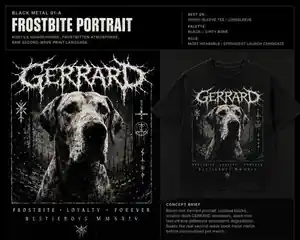
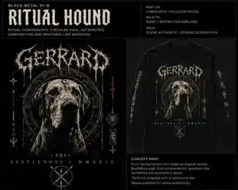
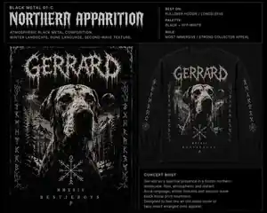

CUSTOM PET ART / UNDERGROUND MERCH / UK DEVELOPMENT
TURN YOUR PET
INTO MERCH.
BestieBoys turns real pets into scene-authentic apparel and artwork. Gerrard — a Shar Pei — is the development example while we build a proper underground-merch design system. Likeness is locked to his broad wrinkled muzzle, small folded ears, forehead folds and fawn colouring.

7 SCENES
1 PET
SEVEN SCENES.
THREE DESIGNS EACH.
Tap a genre, then tap a concept only when you want the full art-direction brief. The compact view keeps garment, palette and role easy to compare on mobile.
 3 concepts
3 concepts
BM-A / LAUNCH PICKEARLY VISUAL MOCKUPFrostbite Portrait
Tee / LongsleeveBlack + BoneLaunch
Shar Pei likeness locked: preserve Gerrard’s broad wrinkled muzzle, small folded ears and forehead folds. Use a blown-out one-colour portrait with an asymmetric hand-drawn branch/root GERRARD mark — thin, scratchy and crude, with no drips and no generic thorn-metal font. Sparse dead-tree/frost texture, toner loss and imperfect screenprint reproduction.
BM-BEARLY VISUAL MOCKUPRitual Hound
Longsleeve / HoodieBone + OxbloodCollector
Shar Pei portrait used as the icon. No conventional extreme-metal logo: set GERRARD small in a crude medieval serif beneath an original BestieBoys sigil. Use asymmetric hand-built marks, specimen numbering and a sparse back crest; avoid mirrored rune decoration and avoid reusing the Frostbite lettering system.
BM-CEARLY VISUAL MOCKUPNorthern Apparition
Oversized / HoodieCool GreyFashion
Shar Pei silhouette emerging from fog and ruined woodland with large areas of negative space. Set GERRARD in restrained narrow serif or primitive hand lettering rather than an extreme-metal logo. Use worn halftone, faint landscape texture and a minimal back mark; the atmosphere should carry the design, not decorative symbols.
3 concepts
GR-A / LAUNCH PICKARTWORK PENDINGBlast Portrait
Short SleeveDirty WhiteLaunch
Three deliberately misregistered Gerrard photocopy passes, huge compressed type, torn flyer texture, tape marks and blown-out xerox whites.
GR-BARTWORK PENDINGNoise Wall
Heavy Tee / HoodieWhite + GreyScene
Fragmented Gerrard zooms, illegible microtype, broken halftones and artwork that escapes the rectangle into the garment.
GR-CARTWORK PENDINGOne Second Legend
LongsleeveBone WhiteWearable
Tiny Gerrard portrait, massive GERRARD / 1 SECOND / LEGEND typography and a deliberately absurd micro track-list treatment.
3 concepts
GG-A / LAUNCH PICKARTWORK PENDINGCanine Pathology
LongsleeveBone + RedLaunch
Vintage pathology-plate Gerrard with pseudo-medical callouts, specimen numbering, hospital-record framing and a tangled custom wordmark.
GG-BARTWORK PENDINGDissection Club
Oversized TeeRed + GreenSocial
Multiple Gerrard portraits, veterinary diagrams, x-ray textures, clinical labels, warning blocks and damaged halftones.
GG-CARTWORK PENDINGTerminal Good Boy
Tee / Zip HoodieBlack + BoneExtreme
Face swallowed by blown-out photocopy damage, dense near-illegible type and faux diagnostic notes such as STATUS: LEGEND.
3 concepts
CR-A / LAUNCH PICKARTWORK PENDINGNo Masters / Only Gerrard
Short SleeveDirty WhiteLaunch
Brutal black-and-white portrait, rough stencil geometry and NO MASTERS / ONLY GOOD BOYS propaganda-style hierarchy.
CR-BARTWORK PENDINGTotal Canine Collapse
Long / ZipBone + RedScene
Repeated Gerrard portraits, torn photocopy blocks, ruined-city texture, wire-fence marks and a large diagonal overprint bar.
CR-CARTWORK PENDINGSystem Failure: Gerrard
Fitted / TeeWhite + AcidLight
Coarse bitmap cutout, protest-poster typography, warning copy, brush marks and intentionally imperfect registration.
3 concepts
PV-A / LAUNCH PICKARTWORK PENDINGGerrard // No Peace
Heavy TeeDirty WhiteLaunch
One huge blown-out Gerrard head cropped to the edges with enormous GERRARD / NO PEACE type and almost no decoration.
PV-BARTWORK PENDINGTen Second Icon
LongsleeveBoneFashion
Tiny chest portrait and 00:10 front treatment contrasted with an enormous degraded Gerrard back print and asymmetric sleeve text.
PV-CARTWORK PENDINGGerrard vs. Everything
Tee / Hoodie / StickerWhite + RedContent
Four coarse-halftone Gerrard crops orbiting oversized GERRARD VS EVERYTHING type with tiny NO INTRO / NO OUTRO / NO COMPROMISE blocks.
3 concepts
GN-A / LAUNCH PICKARTWORK PENDINGSignal Rot: Gerrard
Oversized TeeFilthy GreyFashion
Recognisable Gerrard face fractured into crushed copies, scan-error strips, black bars, raster noise and corrupted transmission markings.
GN-BARTWORK PENDINGGurgle Transmission
LongsleeveWhite + Dark RedScene
Gerrard buried in microscopic pseudo-track titles, waveform lines, broken letterforms, bitmap fragments and an almost unreadable custom logo.
GN-CARTWORK PENDINGUnlistenable Good Boy
Tee / StickerBlack + WhiteSocial
Tiny bad photocopy portrait, UNLISTENABLE GOOD BOY type and a compressed fake track list that becomes texture rather than a novelty graphic.
3 concepts
DD-A / LAUNCH PICKARTWORK PENDINGEternal Weight
Heavy Tee / HoodieBone + BronzeLaunch
Gerrard rendered like an aged engraving or stone relief beneath an original gothic arch, with narrow serif titling and a fade-to-black edge.
DD-BARTWORK PENDINGThe Good Boy Never Dies
Zip HoodieBone + OxbloodMemorial
Central Gerrard portrait with dark halo disc, dead florals, stone texture, ornamental thorns and restrained memorial typography.
DD-CARTWORK PENDINGCrypt Hound
LongsleeveGrey + MossCollector
Original crypt illustration with Gerrard, weathered stone, deep shadow, fog, ornamental decay and deliberately elaborate old-metal-shirt detailing.
SEVEN FORMATS.
NO RANDOM PET SHOP.
The launch catalogue stays disciplined. Each approved design is adapted only where the artwork and garment genuinely work together.
CHOOSE THE WORLD.
THEN BUILD THE PIECE.
Personalisation stays simple for the customer while the art direction stays disciplined on the BestieBoys side.
Scene
Select the cultural visual language: Black Metal, Grindcore, Goregrind, Crust, Powerviolence, Gore Noise or Death/Doom.
Concept
Select one of three genuinely different art directions inside that scene.
Pet
Your source photo, name and meaningful details are art-directed into the selected visual language.
Proof
Artwork is checked for likeness, hierarchy and print suitability before any future production step.